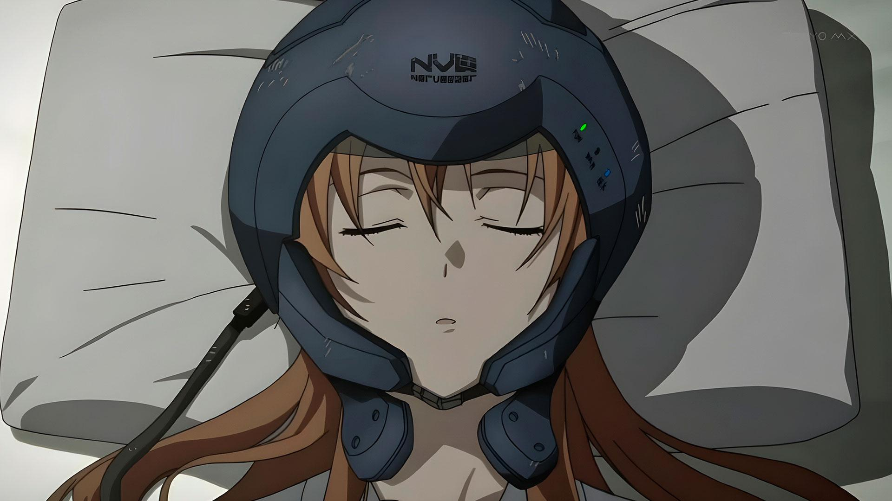
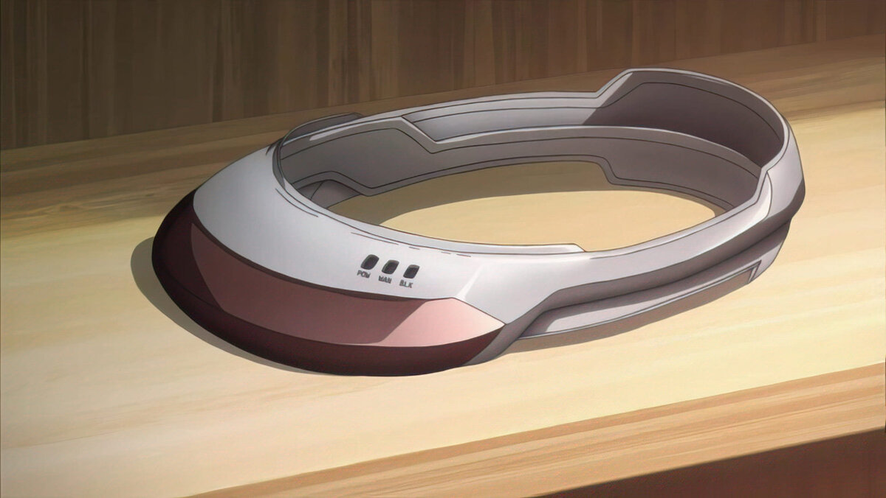
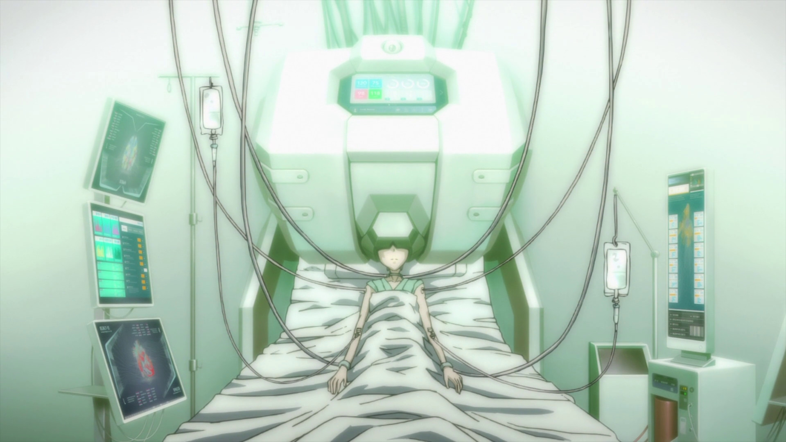
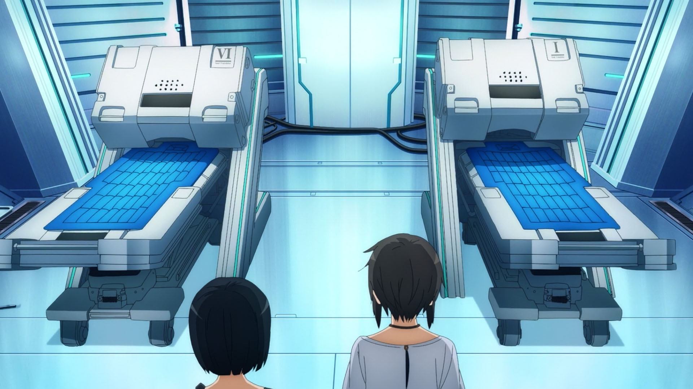
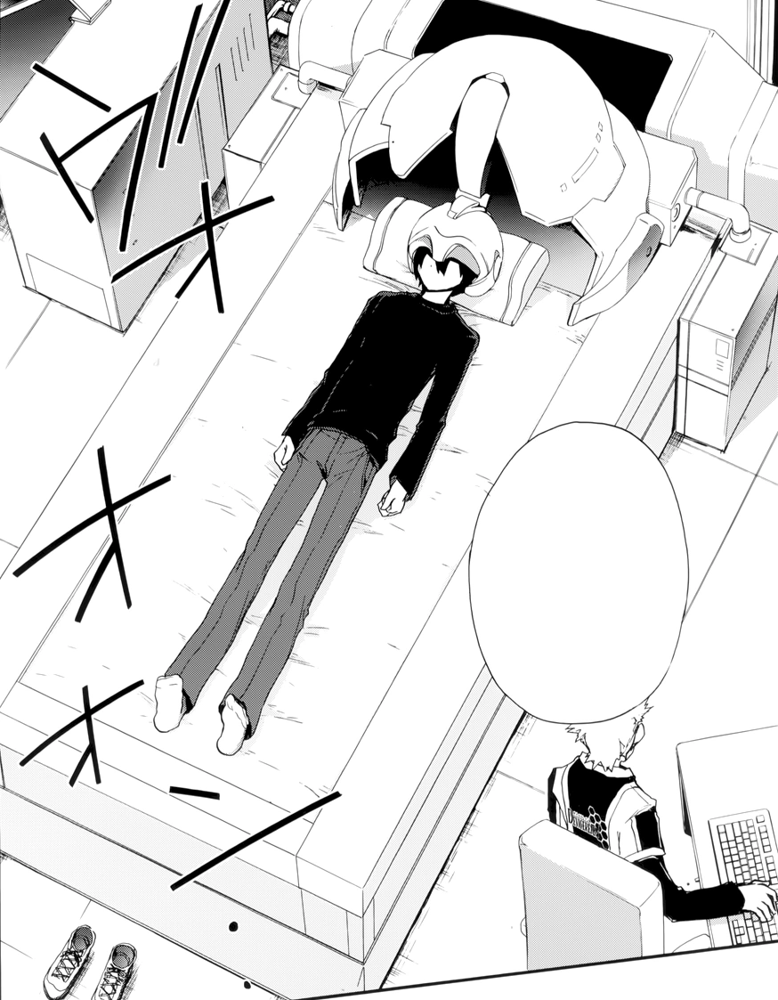

Технологии Полного Погружения
Полное Погружение является технологией, позволяющей полностью погрузить свое сознание в виртуальную реальность. Эта разработка Акихико Каябы привела к созданию устройства, называемого Нейрошлемом. Эта технология лежит в основе всего сюжета Sword Art Online.
Нейрошлем
Нейрошлем был создан компанией «Аргус». Он полностью переносит сознание человека в виртуальность, связываясь непосредственно с мозгом посредством электромагнитных сигналов. С помощью этих сигналов шлем воздействует на все органы чувств, а также перехватывает все моторные импульсы, посылаемые мозгом к телу. Таким образом, тело человека в реальности будет оставаться неподвижным. Шлем оборудован собственной батареей на случай отключения питания, а также высокочастотным передатчиком электромагнитных микроволн, который способен привести к повреждению жизненно важного участка головного мозга, что приведёт к смерти. Эту функцию использовал Акихико Каяба, чтобы запереть игроков в своей игре. Несмотря на огромный потенциал и практически бесконечные возможности, Нейрошлем после своего выпуска мог предложить всего несколько головоломок, обучающих и экологических игр; у закоренелых геймеров это вызывало лишь недовольство. Поэтому-то «Sword Art Online» стала главной новостью во всем мире. Нейрошлем — это первое устройство Полного Погружения, которое вышло в массовое производство. Подключается проводом как к сети, так и к Интернету.
Амусфера
Амусфера — устройство для полного погружения, созданное через полгода после начала инцидента с SAO компанией «РЕКТО Прогресс». Девиз компании был: «Полная безопасность», и действительно, Амусфера не способна причинить пользователю какого-либо вреда, т.к. испускает лишь низко- и средне-частотные волны для связи с мозгом пользователя. По принципу действия ничем не отличается от нейрошлема, кроме повышенной производительности. По дизайну напоминает два тонких, изящных кольца из полупрозрачного пластика. Может подключаться к интернету без проводов (WiFi). Для повышения безопасности Амусфера следит за состоянием здоровья и отключает игрока от игры при слишком высоком или низком пульсе, высокой потере воды и т.п.
МедиКубоид
МедиКубоид — технология Полного Погружения, разработанная в медицинских целях для улучшения качества жизни неизлечимо больных пациентов. Это одно из многих новшеств, которое было создано не для развлечения. Внешне похож на белый саркофаг. У него в несколько раз больше плотность сенсоров и выше мощность процессора, чем у Амусферы. Интегрирован в койку и работает не только с головным мозгом, но и со спинным. Самая важная из областей применения — лечение обреченных больных. Был разработан фирмой-производителем, но основной дизайн расположения датчиков и излучателей предоставила Кодзиро Ринко, которая присматривала за Каябой Акихико во время его погружений. Соответственно, создатель базового дизайна Медикубоида - Акихико Каяба. Первый испытатель - Конно Юки.
Транслятор Души
Транслятор Души — это технология Полного Погружения четвёртого поколения, разработанная Хигой Такэру в компании RATH. В отличие от своих предшественников, технология подключается к Флактлайту человека, а не к его мозгу. По состоянию на 5 июля 2026 года, всего существует шесть Трансляторов: два в головном офисе RATH в Роппонги, четыре на Ocean Turtle. Дизайн Транслятора Души в основном основан на МедиКубоиде, спроектированном Кодзиро Ринко для медицинского применения. МедиКубоид, в свою очередь, был основан на высокоинтенсивном выходном сканере, который Каяба Акихико использовал, чтобы навечно переместить своё сознание в Интернет, что стоило ему жизни. Транслятор был сконструирован с целью создания высокоадаптивного Искусственного Интеллекта типа «снизу-вверх» для Проекта «Алисизация» под предлогом «улучшения морской разведки». В отличие от предыдущих методов создания подобных ИИ, которые основывались на существующей компьютерной архитектуре, чтобы ИИ мог накапливать данные посредством простых вопросов и ответов, ИИ, созданный для Проекта, основан на структуре человеческого мозга, чтобы создать ИИ с таким же сознанием и уровнем адаптации, как у человека. Поскольку STL может сканировать и, следовательно, копировать структуру человеческого сознания, называемой Флактлайтом, Транслятор может успешно клонировать человеческую душу и создавать ИИ со свойствами реального человека.
 